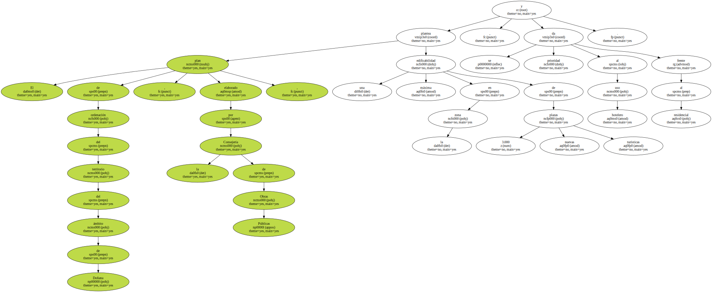
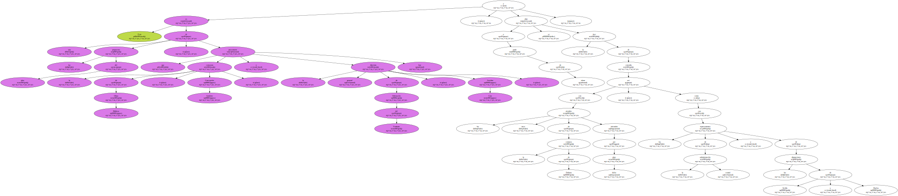
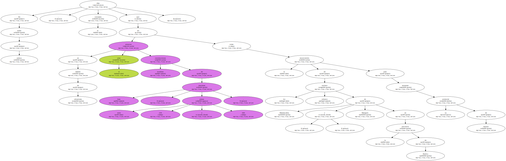
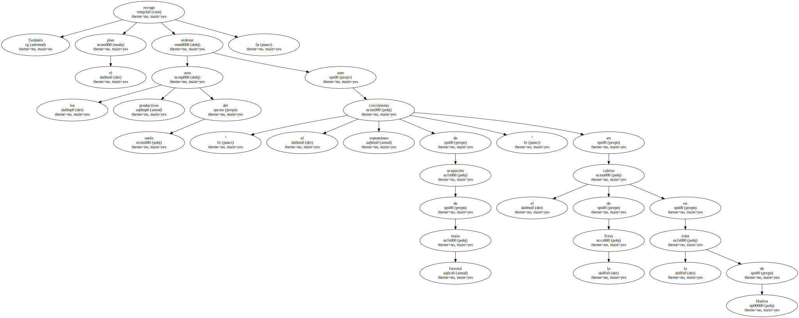
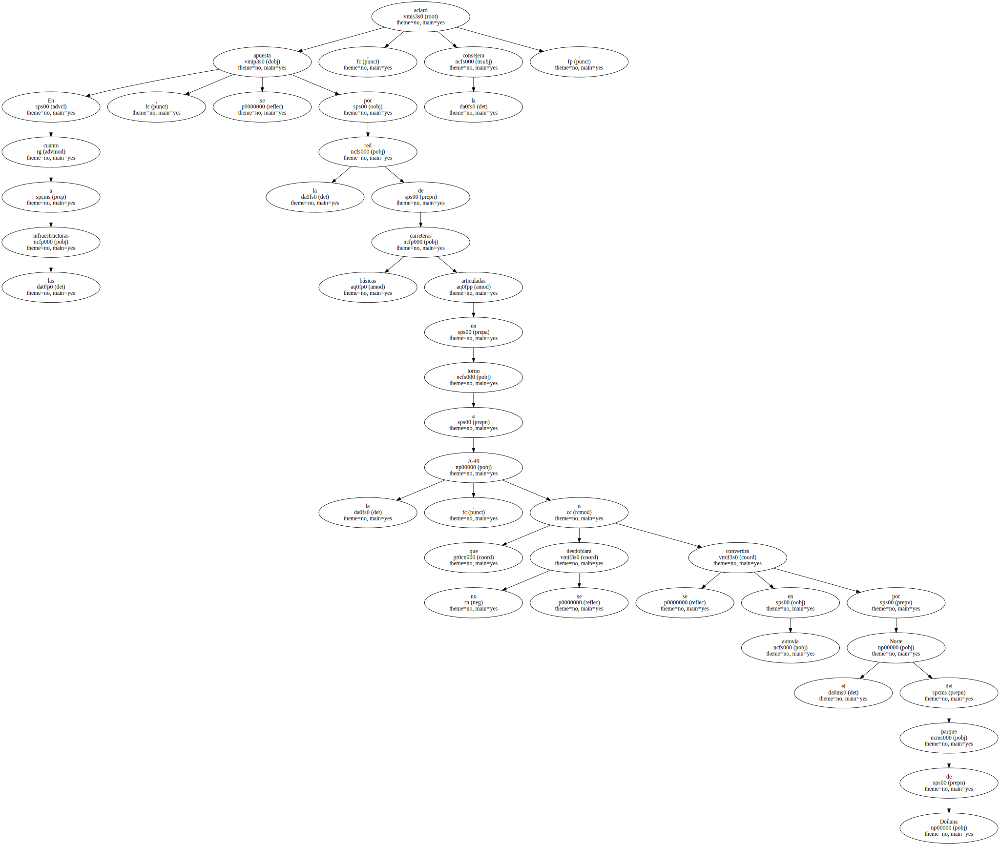
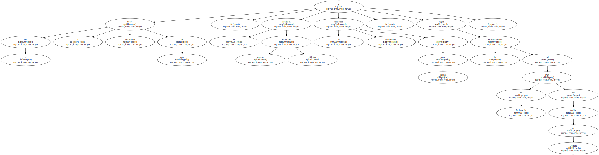
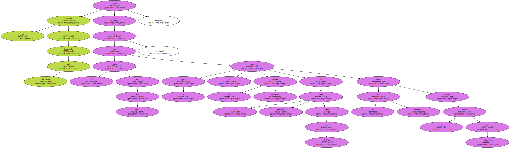
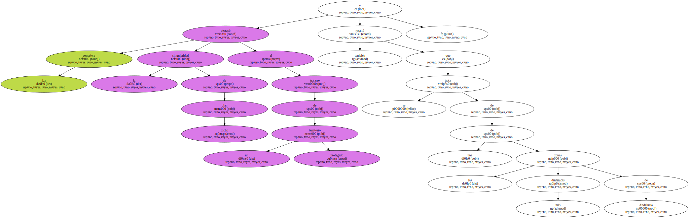

El plan de ordenación del territorio del ámbito de Doñana , elaborado por la Consejería de Obras Públicas , plantea una edificabilidad máxima en la zona de 3.000 nuevas plazas turísticas , y se da prioridad al uso hotelero frente al residencial.
Esta es una de las propuestas del plan , que la consejera de Obras Públicas , Concepción Gutiérrez , y la directora general de Ordenación del Territorio , Josefina Cruz , presentaron hoy , y a partir de ahora se abre la fase de consulta con los trece alcaldes de la comarca de Doñana afectados por dicho plan , así como con los representantes de la administración central y de las diputaciones de Sevilla y Huelva.
En rueda de prensa , la consejera dijo que en materia de urbanismo el plan propone construcciones hoteleras de baja densidad , entre 250 y 300 plazas , así como la reconversión de los núcleos urbanos de Matalascañas y Mazagón , en la provincia de Huelva , para recuperar su potencial de riqueza.
También recoge el plan ordenar los usos productivos del suelo ante " el crecimiento espontáneo de ocupación de masa forestal " en el cultivo de la fresa en la zona de Huelva.
En cuanto a las infraestructuras , se apuesta por la red de carreteras básicas articuladas en torno a la A-49 , que no se desdoblará o se convertirá en autovía por el Norte del parque de Doñana , aclaró la consejera.
Sobre el uso y concesiones del agua , se prohíben nuevas estaciones hídricas y se establecen limitaciones en algunas zonas , según las recomendaciones del Plan de Ordenación del ámbito de Doñana.
La directora de Ordenación del Territorio explicó que los objetivos de dicho plan son proteger el espacio y los valores ambientales de una zona protegida como es Doñana , ordenar los usos productivos y articular el ámbito de aplicación.
Josefina Cruz dijo que el plan podría estar aprobado por el Consejo de Gobierno de la Junta entre seis meses y un año , tras pasar todos los trámites pertinentes.

La consejera destacó la singularidad de dicho plan al tratarse de un territorio protegido y resaltó también que se trata de una de las zonas más dinámicas de Andalucía.
